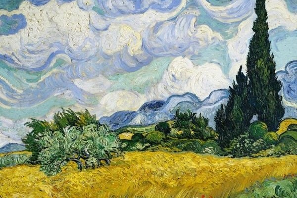

This magnificent boxed-set showcases the brilliance of Van Gogh's essential works in stunning accordion-fold pages that bring his vibrant colors and expressive brush strokes to life. Approximately fifty of his most important pieces are beautifully reproduced on heavy stock, presented chronologically to trace his artistic evolution. From well-known masterpieces like Irises and The Starry Night to lesser-known gems, readers will explore Van Gogh's diverse experimentation with various genres and styles, from landscapes to portraiture. The included booklet offers insights into each painting, alongside a glimpse into the artist's life and influences. Encased in a sturdy slipcase, this set is a treasure for Van Gogh enthusiasts and a valuable resource for anyone seeking to delve into the captivating world of this beloved painter.
Art museums and galleries collect and exhibit works of art by their artistic merits, regardless of racial, ethnic, national, social, and cultural background of the artist. Art museums and galleries provide a unique space where people can transcend various barriers that divide people.
The majority of Van Gogh's best-known works were produced during the final two years of his life. During the fall and winter of 1888, Vincent Van Gogh and Paul Gauguin lived and worked together in Arles in the south of France, where Van Gogh eventually rented four rooms at 2 Place Lamartine, which was dubbed the "Yellow House" for its citron hue. The move to Provence began as a plan for a new artist's community in Arles as alternative to Paris and came at a critical point in each of the artists' careers. While at the "Yellow House" Gauguin and Van Gogh worked closely together and developed a concept of color symbolic of inner emotion and not dependent upon nature. Despite enormous productivity, Van Gogh suffered from various bouts of mental instability, likely including epilepsy, psychotic episodes, delusions, and bipolar disorder. Gauguin left for Tahiti, partially as a means of escaping Van Gogh's increasingly erratic behavior. The artist slipped away after a particularly violent fight in which Van Gogh threatened Gauguin with a razor and then cut off part of his own left ear.
An art gallery is a room or a building in which visual art is displayed. In Western cultures from the mid-15th century, a gallery was any long, narrow covered passage along a wall, first used in the sense of a place for art in the 1590s. The long gallery in Elizabethan and Jacobean houses served many purposes including the display of art. Historically, art is displayed as evidence of status and wealth, and for religious art as objects of ritual or the depiction of narratives. The first galleries were in the palaces of the aristocracy, or in churches. As art collections grew, buildings became dedicated to art, becoming the first art museums.